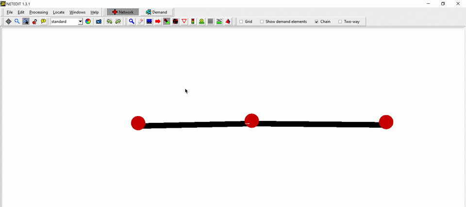
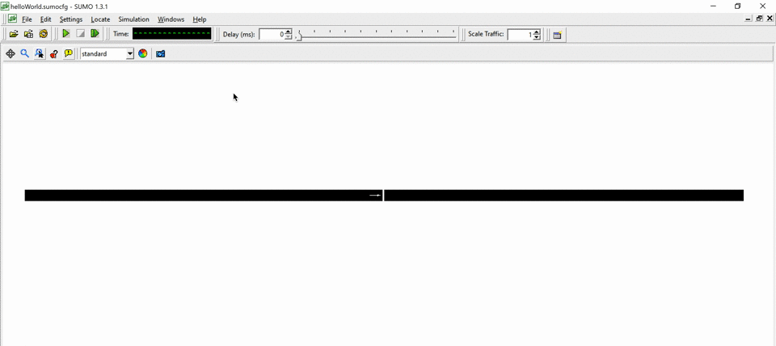

Caution
Make sure to have (at least) SUMO 1.4.0 installed to be able to use all the features shown in this tutorial
Requirements#
Introduction#
This tutorial is for first-time SUMO users. We are going to build the simplest net possible and let a single car drive on it.
In order to perform a very basic simulation in SUMO, it is required to have at least the following elements (files):
- Network
- Route
- SUMO configuration file
In SUMO a street network consists of nodes (junctions) and edges (streets connecting the junctions). In this tutorial we will use NETEDIT to create our basic net.
Routes are defined by connecting edges and assigning Vehicles that pass through them. In this tutorial we will use NETEDIT to create this.
The SUMO Configuration file is where certain options and all files (Network, Route, etc.) are being listed, so that SUMO can find and use them.
Creating the Network in NETEDIT#
Open NETEDIT and create a new network by selecting File->New Network or using the shortcut Ctrl + N
Make sure that Network is selected.
Enter Edge Mode by selecting Edit->Edge mode, using the shortcut E or by clicking on the button.
In Edge Mode, make sure that Chain is selected. This will facilitate creating multiple nodes and their connecting edges with fewer clicks.
Nodes are created by clicking on empty spaces (when in Edge Mode). Insert 3 nodes (aka Junctions) by clicking on three different places at the white blank space. After inserting the last Node, press <ESC> to unselect that last node.

Tip
In NETEDIT you can use Ctrl + Z to undo
Now we want to rename our recently inserted Junctions and Edges (which get arbitrary id's when created) and also make our simple network prettier, by aligning all nodes.
To do so, enter Inspect Mode by selecting Edit->Inspect mode, using the shortcut I or by clicking on the button.
In Inspect mode you can select different type of elements, such as Nodes and Edges. If an element is selected, its properties will appear on the left side. Let's rename (change their id) the nodes to "1", "2" and "3" (from left to right) and the edges to "1to2" and "out" (also left to right).
Replace the position (pos) of the nodes with the following values:
| id | pos |
|---|---|
| 1 | -100,50 |
| 2 | 0,50 |
| 3 | 100,50 |

Our very basic network is done! We just need to save it . Use File -> Save Network (Ctrl + S) or File -> Save Network As (Ctrl + Shift + S) and give it a proper name (such as helloWorld.net.xml).
Do not close NETEDIT yet, the demand still needs to be generated.
Note
In SUMO, Networks must have the following file extension -> .net.xml (example: myNetwork.net.xml)
Demand Generation in NETEDIT#
Now, select the Demand supermode in NETEDIT.
Creating a Route#
Enter Route Mode by selecting Edit->Route mode, using the shortcut R or by clicking on the button.
Creating a route is as simple as clicking on the Edges that will compose it. When selecting an Edge, its color will change.
- FOO Selected Edge
- FOO Possible selectable edges
After selecting all the edges that will compose the desired route, click on Create route.

Adding a Vehicle#
Finally, enter Vehicle Mode by selecting Edit->Vehicle mode, using the shortcut V or by clicking on the  button.
To insert a Vehicle, just click on the beginning of the route. A car will appear. On the left side bar you can change the vehicle's attributes such as id and even the color (just for fun change it to blue).
button.
To insert a Vehicle, just click on the beginning of the route. A car will appear. On the left side bar you can change the vehicle's attributes such as id and even the color (just for fun change it to blue).
Now save the Demand (route + vehicle) file .
Use File -> Demand elements -> Save demand elements (Ctrl + Shift + D) or File -> Demand elements -> Save demand elements as and give it a proper name (such as helloWorld.rou.xml).
Do not close NETEDIT yet.
Note
This demand element file must have the .rou.xml file extension!
Important
Save all simulation related files (Network, Demand and SUMO Configuration file) in the same directory.
Visualizing in SUMO-GUI#
We will open SUMO-GUI from NETEDIT. To do so, go to Edit -> Open in SUMO-GUI (Ctrl + T). This will open SUMO-GUI and load our recently created network and demand files.
As soon as SUMO-GUI opens, let's save the SUMO configuration file (that relates the network and demand files) .
File -> Save Configuration (Ctrl + Shift + S). Give it a proper name (such as helloWorld.sumocfg).
Now you can close NETEDIT if you wish.
Note
SUMO Configuration files have the following file extension -> .sumocfg (example: myScenario.sumocfg)
Before starting the simulation, make sure that the Delay () is set to at least 80 ms, otherwise, the simulation would happen very fast and we would not be able to see our only vehicle in our tiny network.
Click on Run  (Ctrl + A) to start the simulation.
(Ctrl + A) to start the simulation.

From now on, if we want to run this scenario again we only have to open the SUMO Configuration file (*.sumocfg) in SUMO-GUI or SUMO.
That's it! You have your first simulation scenario in SUMO :)
Further Reading#
Do you want to do this exercise again, but using a text editor instead of the NETEDIT graphic interface? Visit this tutorial.
More Tutorials.